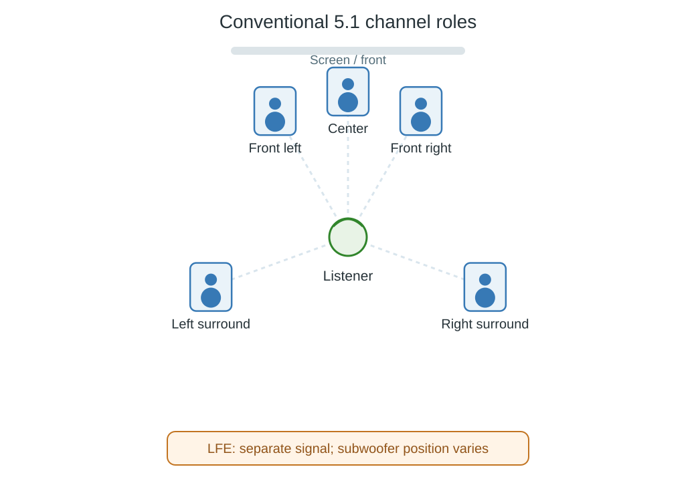

5.1 Surround Sound
5.1 surround sound uses five main channels and a separate low-frequency-effects channel.
A screen-centered voice, a vehicle moving across the front, and rain surrounding the listener can remain separate parts of a 5.1 mix. Five main channels carry the spatial presentation; one additional LFE channel carries band-limited effects.

Schematic top view. The LFE label names a signal, not a prescribed subwoofer location.
Five main channels around the listening position
| Main channel | How it contributes |
|---|---|
| Front left and right | A front soundstage and movement across the screen |
| Center | A stable front-center output, commonly including dialogue |
| Left surround and right surround | Sound around the sides/rear and surrounding ambience |
The center avoids relying entirely on a stereo phantom center for screen dialogue. The surrounds let the mix place sound outside the front arc. A surround pair can carry different effects or shared ambience; neither channel must be continuously active.
ITU-R BS.775's reference geometry places front left/right at ±30 degrees and surrounds in sectors 100–120 degrees from the center-front direction. This gives the listener a defined relationship between channel roles and physical directions. Room-specific installation guidance can adapt the arrangement.
Account for the sixth signal
The “.1” is the low-frequency effects channel. It identifies a limited-band signal, not one tenth of the volume of a main channel. There are six decoded channels altogether.
The main channels can carry substantial bass too. A playback system's bass management can redirect their low-frequency portions to a subwoofer, where they may join LFE. A subwoofer sounding during stereo playback is therefore understandable even though the stereo source has no “.1.” The LFE page separates these paths.
A smaller output needs a new combination
If a 5.1 film is played on a stereo television, center and surround contributions have to be incorporated into two outputs. Simply selecting the original front-left/right signals can remove much of the dialogue and ambience.
The downmix uses coefficients to combine the channels and manage level. Its left/right result is a useful two-channel presentation, while the original individual positions cease to be independently available at that output.
In an Emby session, first identify which track was chosen; a film can have both surround and stereo versions. Then follow whether the six-channel track stayed multichannel or was downmixed during server/client processing. A 5.1 source description and a stereo output can both be correct descriptions of that route.
Adding more playback speakers can distribute or derive sound differently, but the particular 5.1 mix remains organized around these five main roles and the separate LFE signal.